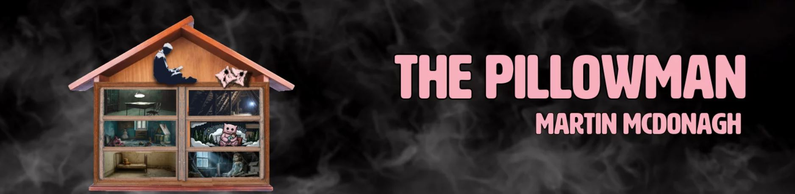

The Pillowman

by Martin McDonagh
A gripping and unsettling dark comedy that centers on a writer in a totalitarian state being interrogated about the gruesome content of his stories, which seem to be mirroring a series of real-life child murders.
Cast

Katurian K. Katurian
Actor: TBA
Michal
Actor: TBA
Tupolski
Actor: TBA
Ariel
Actor: TBA